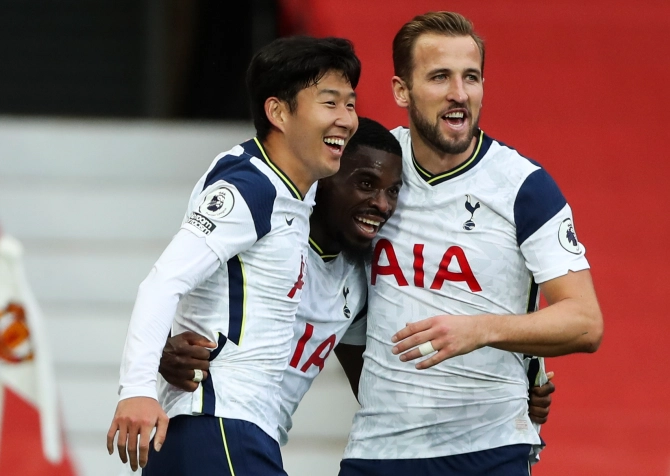
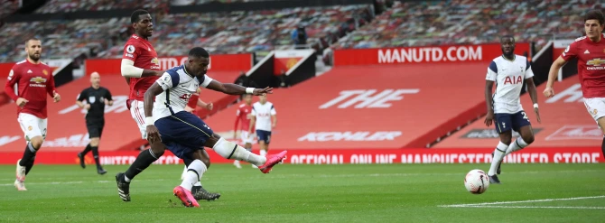
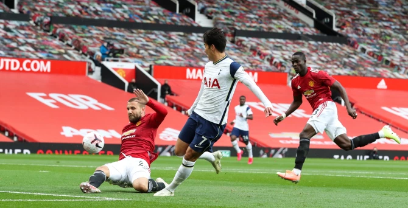
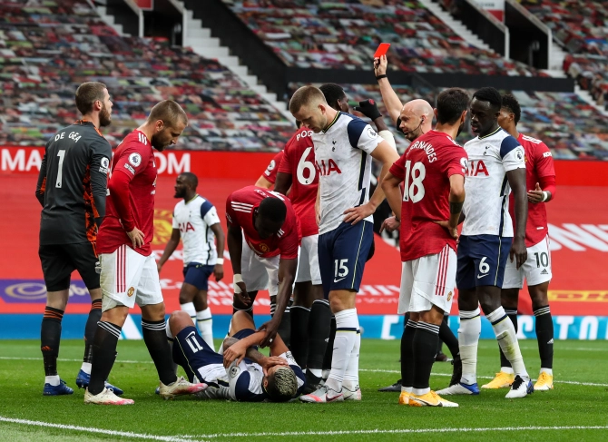
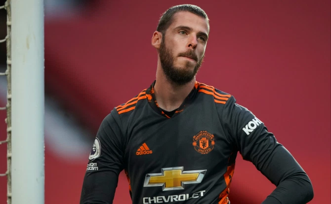
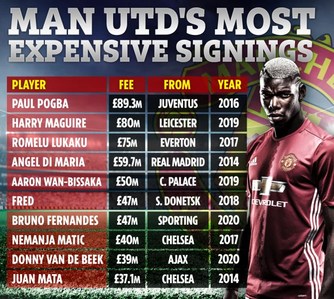
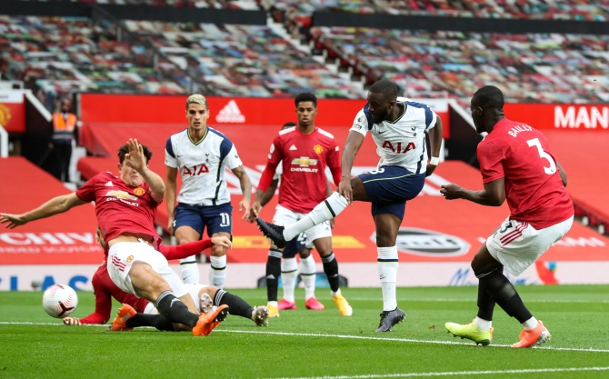

.png "Click to share on Facebook")
THIS WAS A shambles from Manchester United, absolute shambles.
Most definitely, the worst performance since Sir Alex Ferguson retired seven long years ago.



Only the theme music from Benny Hill would have done a montage of their defending justice. The double signing of Lionel Messi and Cristiano Ronaldo today might be the only thing that will cheer United fans up. Yes, Tottenham Hotspur were excellent, not least Harry Kane. But United were embarrassing. The Anthony Martial red card at 2-1 on 28 minutes was harsh. At the very least Erik Lamela should have gone with him. But that cannot paper over some ever-widening cracks. Spurs would still have won this game handsomely they were so much better.
MAN UTD NEWS LIVE: Click here for the latest United news
When the fourth went in after 37 minutes the camera panned to Executive Vice-Chairman Ed Woodward who looked shell-shocked. Ole Solskjaer looked like he was ready to cry. It was as well there were no fans in the ground, as it was even the murals tried to walk out. You can bet in the homes and local pubs of the red faithful the air was blue. It was the worst day for this to happen as well with frustrations already boiling over due to the lack of activity in the transfer market. It will be a wonder if Edinson Cavani doesn’t announce his retirement rather than the fact he is signing on here for two years. Alex Telles too will have been checking if Jet2 were still flying to Portugal from Terminal 2 at Manchester international.


So where to start, well United actually went ahead with, you guessed it, a penalty. Just 23 seconds were gone when Anthony Martial was felled by Davinson Sanchez and the ever-reliable Bruno Fernandes slotted home the kick. The lead lasted just a couple of minutes as three of United’s back four combined to produce the most comical piece of defending you are likely to see. Harry Maguire who is getting worse with every appearance heads to Eric Bally who then heads it up and back to his captain. Maguire’s head back to David de Gea is way short but the problems were compounded when Luke Shaw wrapped himself around Lamela and teed up Tanguy Ndombele to score. There was worse to come. Maguire had clearly been told to push high up on Kane yet that left acres of space behind him as the Spurs striker is starting to drop and leave openings for othe
The England ace seems to enjoy assisting as much as he scores at the minute, that’s six now this season to go with his eight goals. After Maguire bundled him over 40 yards out Kane was alert to take a quick free kick putting Heung-Min Son clean through to clip a shot past De Gea. United were all over the place, rudderless, leaderless. The captain dare not try to rally the troops at that point as he was the worst player on the pitch. The red card compounded the problems still further. As a crowded area waited for a Spurs corner, Lamela put his elbow into Martial’s chin and the United striker reacted by giving him a slap on his chin. It was the slightest touch but didn’t stop Lamela going down as if Tyson Fury had administered it.


If Martial was going then Lamela had too as well but only the United player saw red. Tottenham meanwhile saw more goals on the horizon. The third came on 31 minutes. United are simply not good enough to play it out from the back so why do they keep trying. Bailly’s loose pass was cut out by a sliding Harry Kane who got up to receive a square ball back from Son to fire home. The circus was in full swing and next up came the Maguire-Shaw show again.
MASSIVE HOLE
Shaw raced away from the middle of the box to cut out what he thought was going to be a backwards pass from Serge Aurier. Best leave the predictive stuff to Mystic Meg Luke. He left a massive hole in the box when Aurier instead slipped a near-post ball though Maguire’s legs for Son to clip home at the near post. Spurs went further ahead just six minutes after the break when a dawdling Pogba failed to track Aurier who fired across Dea Gea and just inside the far post. Pogba was not done sliding in on Ben Davies to conceded a 79th minute penalty which Kane blasted home to make it six. That matched the score Manchester City famously notched up back here back in October 2011. The final whistle ended the humiliation. The post mortems were just starting.
7 - Man Utd v Tottenham is the first @premierleague match to see three goals scored in the opening seven minutes since Burnley v Man City in April 2010, and first in which both sides scored since Nottingham Forest v Man Utd in February 1999. Madness. #MUNTOT pic.twitter.com/o5M3TFERSN
— OptaJoe (@OptaJoe) October 4, 2020
6 - Harry Kane has made more assists than any other player in the Premier League this season, while he's only made more in a single campaign once previously in his career (7 in 2016-17). Architect. #MUNTOT pic.twitter.com/7x8zzXhZTa
— OptaJoe (@OptaJoe) October 4, 2020